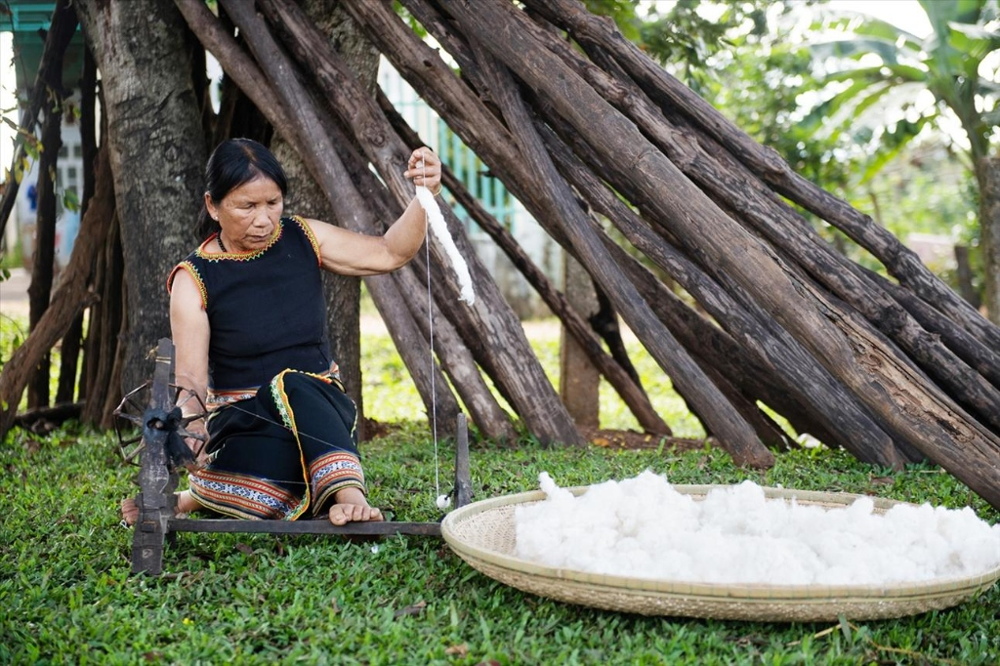
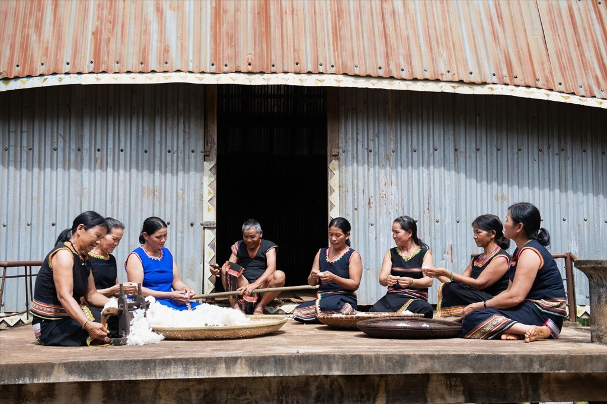
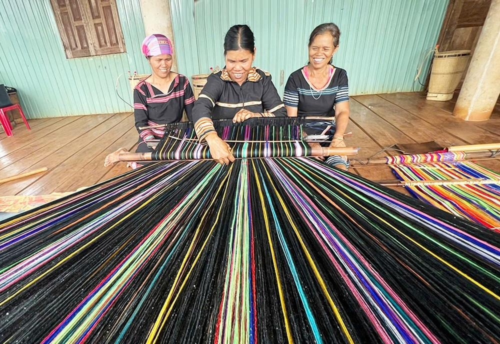
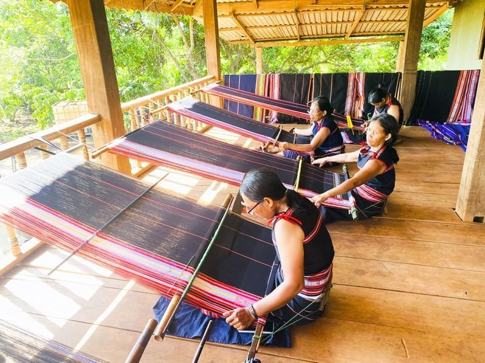
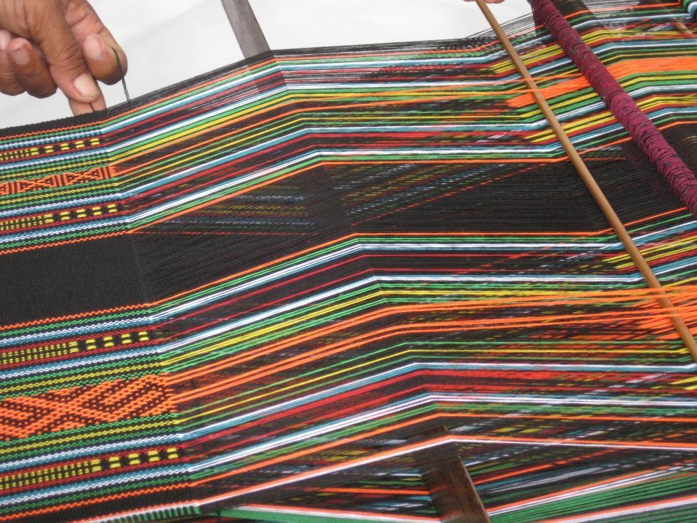
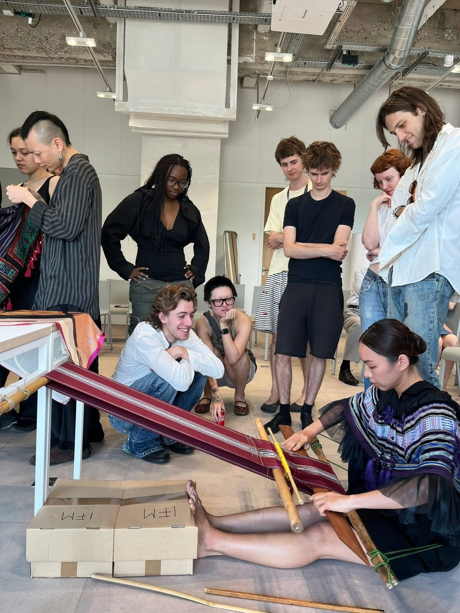
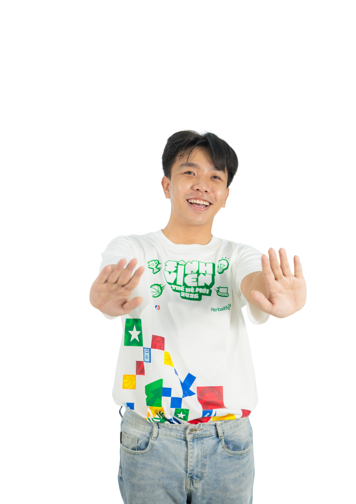

“Nếu một nghề truyền thống có giá trị nhưng người làm nghề không thể sống được từ nghề, thì làm thế nào để nghề ấy tiếp tục tồn tại?” — Câu hỏi trăn trở ấy đã đưa nhóm chúng tôi đặt chân đến buôn làng Ia Mơ Nông. “If a heritage craft is precious but craftspeople cannot make a living from it, how can that craft survive?” — That haunting question drove our research team directly to Ia Mo Nong village.
Từ vòng casting đến vòng đấu chính thức của cuộc thi SVTHM, dự án đã chuyển mình mạnh mẽ: từ một ý tưởng trên trang giấy thành một dự án có địa bàn thật, người làm nghề thật, sản phẩm thật và bước đầu được kiểm chứng trong thực tế. From the preliminary casting to the official round, our project transformed: from a theoretical proposal into an empirical initiative with real villages, real weavers, and real products validated in practice.
Tại xã Ia Mơ Nông, huyện Chư Păh, chúng tôi ngồi cùng những người phụ nữ Jrai bên hiên nhà sàn, lắng nghe tiếng lách cách của thoi đưa và nhận ra: công nghệ số không phải để thay thế đôi bàn tay nghệ nhân, mà là chiếc cầu nối để đưa câu chuyện, công sức và tri thức văn hóa phía sau từng nếp dệt đến với những khách hàng trân quý. Sitting beside Jrai craftswomen on stilt-house verandas, listening to the rhythmic tap of wooden shuttles, we realized: digital technology does not replace artisan hands; it serves as a bridge delivering stories, hours of labor, and wisdom to appreciative patrons.
“Không thay đổi cái gốc của nghề, thay đổi cách giá trị của nghề được nhìn thấy.”
Mỗi tấm thổ cẩm Jrai là kết tinh của hàng chục giờ đếm từng sợi chỉ trên khung cửi hông, trải qua 6 công đoạn khắt khe từ cây bông rừng đến mác định danh số QR. Every authentic Jrai textile is born through dozens of hours counting individual warp threads across 6 meticulous stages.

CHẶNG 01 • BÌA RỪNG CHƯ PĂHVào khoảng tháng 11 - 12 hàng năm, phụ nữ Jrai lên nương rẫy và bìa rừng Chư Păh thu hái những quả bông tự nhiên vừa bung nở trắng muốt, giữ trọn vẹn độ tơi xốp và tinh khiết của đất trời đại ngàn.
Xem chi tiết công đoạn ➔
CHẶNG 02 • BÊN HIÊN NHÀ SÀNTách sạch hạt bằng trục cán gỗ mộc mạc, vò bông thành từng búp mịn rồi dùng ống quay xa bằng tay để kéo thành những cuộn sợi chỉ dai chắc, bền bỉ và đều đặn theo từng vòng quay nhịp nhàng.
Xem chi tiết công đoạn ➔
CHẶNG 03 • NỒI NHUỘM BẢN ĐỊANấu nước lá chàm mun (T'râm) tạo sắc đen huyền bí, vỏ cây Klét đun sôi cho màu đỏ đất bazan, rễ cây Knung cho sắc vàng tươi ấm áp. Từng cuộn sợi được ngâm ủ kỹ lưỡng nhiều ngày đêm dưới nắng gió.
Xem chi tiết công đoạn ➔
CHẶNG 04 • CỬI HÔNG TRUYỀN THỐNGKhác biệt hoàn toàn với cửi đứng công nghiệp, khung cửi hông Jrai được cố định bằng đai da áp sát lưng nghệ nhân. Độ ngả người và lực đẩy đôi chân tạo nên độ căng tự nhiên hoàn hảo cho từng sợi dọc.
Xem chi tiết công đoạn ➔
CHẶNG 05 • TRUYỀN KHẨU KÝ ỨCKhông cần sơ đồ trên giấy, nghệ nhân nhặt đếm từng sợi chỉ theo bài ca truyền khẩu của mẫu hệ. Hoa văn cánh bướm Kơkơh, sóng âm Chiêng cồng, Răng cưa bảo vệ hiện lên sắc sảo, sống động.
Xem chi tiết công đoạn ➔
CHẶNG 06 • MINH BẠCH SỐ HÓATác phẩm dệt xong được kiểm định khắt khe và cấp một tem mác QR độc bản. Người mua dùng camera điện thoại quét mã là thấy ngay chân dung nghệ nhân, làng nghề Ia Mơ Nông và công sức dệt nên sản phẩm.
Xem chi tiết công đoạn ➔Những người gieo khát vọng số hóa và kết nối sinh kế bền vững cho buôn làng Jrai tại cuộc thi SVTHM 2026.
